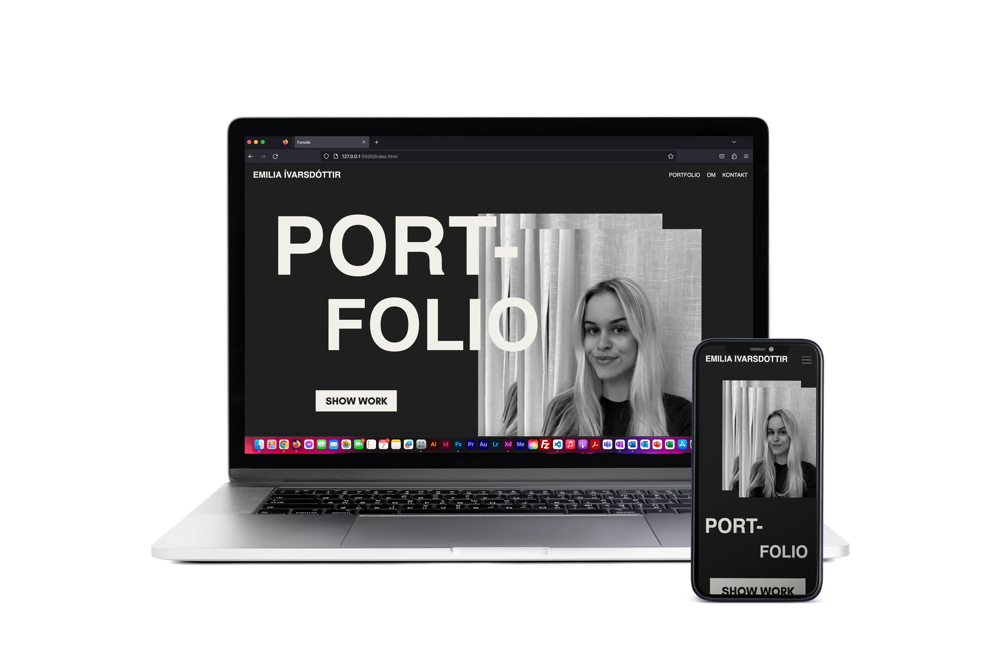
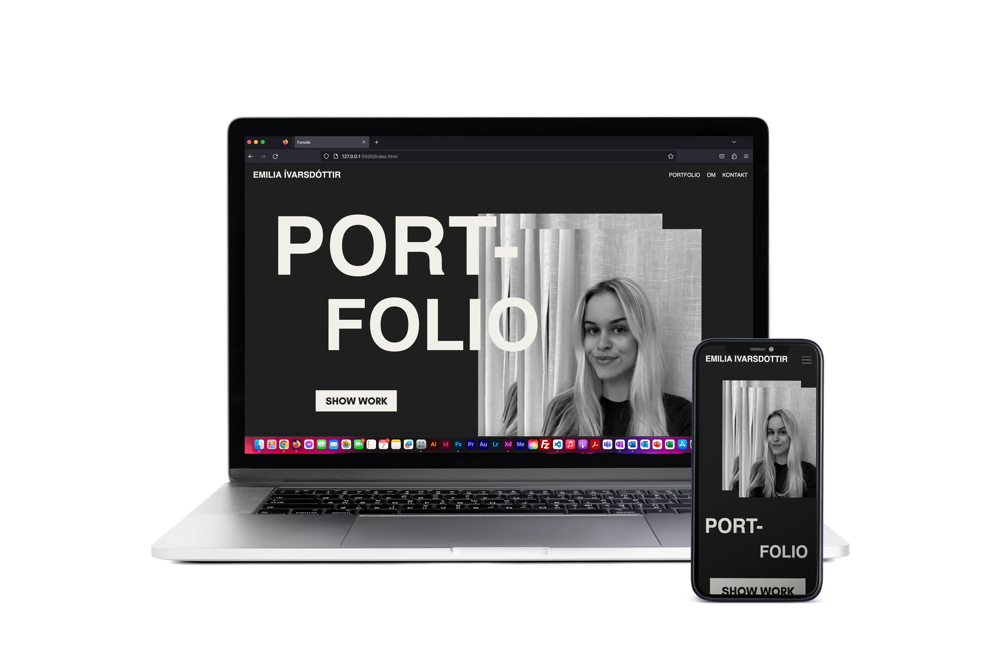

06
PORTFOLIO
PORTFOLIO
 

I dette tema blev vi introduceret til CSS-animation og JavaScript. Vi blev også præsenteret for idé-genereringsmetoden "kryds-metoden", som vi anvendte til at finde et handlingsforløb til vores spil.
IDÉ-GENERERING


I designprocessen, valgte jeg at bruge Jade Browns stil som inspiration. Denne stil er kendetegnet ved stærke farver, kontraster, fed tekst, asymmetriske figurer og atmosfæriske baggrunde.
DESIGNPROCESS
SKITSER


I designprocessen, valgte jeg at bruge Jade Browns stil som inspiration. Denne stil er kendetegnet ved stærke farver, kontraster, fed tekst, asymmetriske figurer og atmosfæriske baggrunde.
MOODBOARD

I designprocessen, valgte jeg at bruge Jade Browns stil som inspiration. Denne stil er kendetegnet ved stærke farver, kontraster, fed tekst, asymmetriske figurer og atmosfæriske baggrunde.
STYLETILE
I designprocessen, valgte jeg at bruge Jade Browns stil som inspiration. Denne stil er kendetegnet ved stærke farver, kontraster, fed tekst, asymmetriske figurer og atmosfæriske baggrunde.
PROTOTYPE
TEST
KODE